ID消费系统--卡管理
在卡管理中，用户可以进行发卡、充值、退款、退卡和修改卡资料等操作。此外，在此页面中用户还可以进行卡管理的相关操作，包括挂失、解挂、注换卡和启用卡等操作。
 注意：在卡管理过程中，操作正在进行时，请勿移动卡片（卡片须置于发卡器的置卡处），以免操作失败。待操作成功后，方可移开卡片。
注意：在卡管理过程中，操作正在进行时，请勿移动卡片（卡片须置于发卡器的置卡处），以免操作失败。待操作成功后，方可移开卡片。
点击【人事】 【卡管理】，进入如下图所示卡管理页面：
【卡管理】，进入如下图所示卡管理页面：
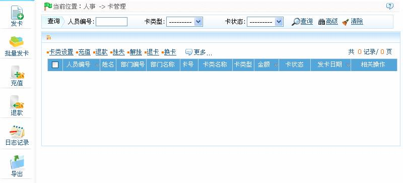
用户可以在此页面中进行发卡、批量发卡、充值、卡类设置、退款、挂失/换卡等卡管理相关操作。
 备注：用户可连接ID发卡器，将卡片放在发卡器的置卡处（如下图所示），此时发卡器将自动读取卡号并显示在卡号后的输入框中，省去手动输入卡号的麻烦。
备注：用户可连接ID发卡器，将卡片放在发卡器的置卡处（如下图所示），此时发卡器将自动读取卡号并显示在卡号后的输入框中，省去手动输入卡号的麻烦。
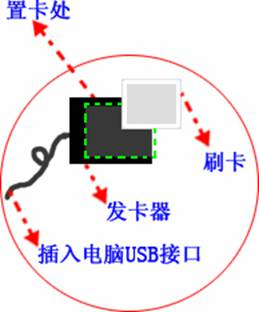
ID--4.6.1 发卡
（1）、点击【人事】 【卡管理】
【卡管理】 【发卡】，进入如发卡页面，如下图所示：
【发卡】，进入如发卡页面，如下图所示：
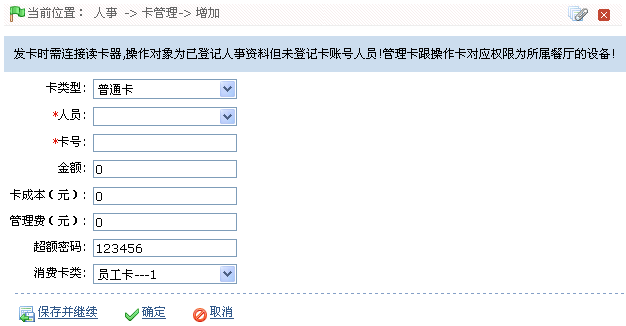
根据需要进行各参数设置，具体设置方法如下：
-
卡类型：选择卡类型，可选择为普通卡或管理卡。
-
人员：单击按钮，在弹出的人员选择框中，选择需发卡的人员。人员的选择方法请参见附录1 常用操作中的1人员选择。
-
卡号：手动输入卡号，或使用ID发卡器获取卡号。
-
金额：输入金额。
-
卡成本（元）：输入卡成本。（退卡时可以退还。）
-
管理费（元）：输入管理费。（退卡时不退还。）
-
超额密码：默认为123456，用户可根据需要修改，只支持6位数字密码。
-
消费卡类：选择卡类。卡类设置，请参见ID--8.6 卡类资料。
（2）、设置完成后，单击【确定】按钮，开始发卡，发卡成功后，自动返回卡管理页面，此时卡信息列表中将显示已发卡的信息。
 注意：一人仅能发一次卡。
注意：一人仅能发一次卡。
ID--4.6.2 批量发卡
 注意：输入的编号请勿超过系统支持的人员编号最大位数。
注意：输入的编号请勿超过系统支持的人员编号最大位数。
单击【人事】 【卡管理】
【卡管理】 【批量发卡】，进入批量发卡页面：
【批量发卡】，进入批量发卡页面：
假设：
-
输入的起始人员编号为“1”。
-
结束人员编号为“20”。
-
余额为“100”。
-
管理费为“10”。
-
成本为“10”。
-
卡密码为默认密码“123456”（可修改，最大位数为6位）。
-
卡类选择为“员工卡”，卡类设置请参见ID--8.6 卡类资料。
具体设置如下图所示：
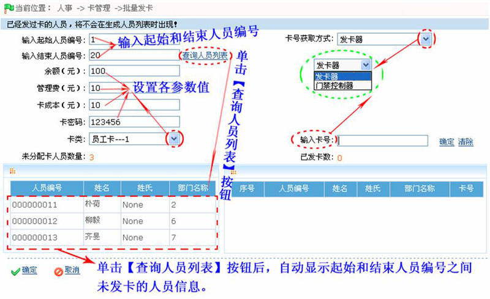
-
未分配卡人员数量：为用户输入的起始和结束人员编号之间未发卡的人员总数量。单击【查询人员列表】后，将自动生成。如上图所示，未分配卡人员数量显示为3。
-
输入卡号：输入准备为人员分配的卡号或通过发卡器读取卡号。
-
已发卡数：根据当前已发卡的数量自动生成。
假设：
（1）、选择的“卡号获取方式”为发卡器；
（2）、将ID发卡器连接至电脑；
（3）、在“输入卡号”后的输入框中单击鼠标左键；
（4）、依次将ID卡放置在ID发卡器的置卡处，发卡器自动获取卡号并从为“未分配卡人员列表”中的首个人员开始发卡。发卡成功后，自动清除“未分配人员列表”中相关人员信息，并在右边的“已发卡人员列表”中显示已发卡的人员信息（包括卡号）。
具体操作如下图所示：
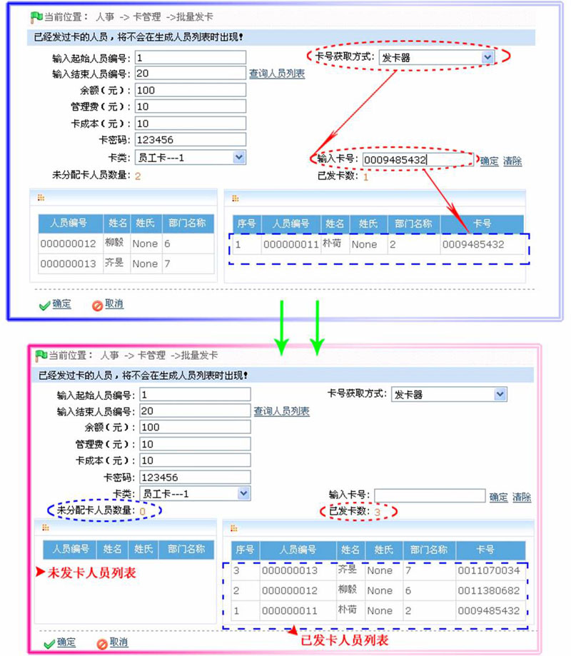
如上图所示，此时未分配卡人员数量自动更新为0，已发卡数显示为3。
（5）、完成发卡后，单击【确定】按钮保存发卡信息，并返回卡管理页面；此时页面的卡信息列表将显示所有已发卡的人员的卡信息，如下图所示：
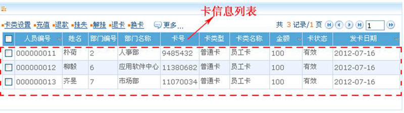
ID--4.6.3 充值
该操作，是为已发卡进行充值。系统提供了两种充值方法，具体步骤如下所述。
方法一：
1、单击【人事】 【卡管理】
【卡管理】 【充值】，进入充值页面：
【充值】，进入充值页面：
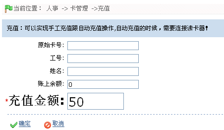
2、在原始卡号后输入需要充值的卡号或通过发卡器读取卡号。单击空白处，将自动显示与卡号对应的卡信息，如下图所示：
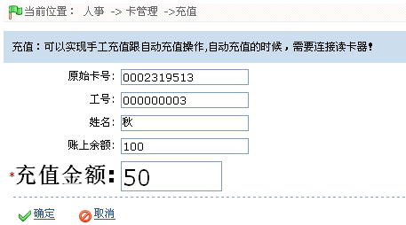
3、在充值金额后输入充值金额，然后单击【确定】按钮，开始充值，充值成功后自动返回卡管理页面，此时卡信息列表中将显示充值成功后的卡信息。
方法二：
 备注：本操作一次只针对一个卡号。
备注：本操作一次只针对一个卡号。
1、在卡管理页面的卡信息列表中，单击选中需充值的卡，然后单击卡信息列表上方的【充值】按钮，进入充值页面：
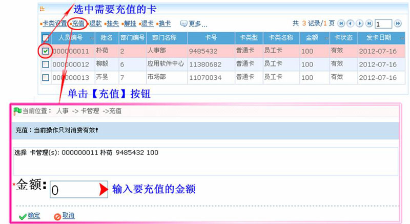
2、在金额后，输入要充值的金额，然后单击【确定】按钮为选中的卡充值。充值成功后自动返回卡管理页面，此时卡信息列表中将显示充值成功后的卡信息。
ID--4.6.4 退款
 注意：只有卡上余额大于0且处于正常状态下的卡（即非挂失卡）才能进行退款操作。
注意：只有卡上余额大于0且处于正常状态下的卡（即非挂失卡）才能进行退款操作。
系统提供了两种退款的方法，具体步骤如下所述。
方法一：
1、单击【人事】 【卡管理】
【卡管理】 【退款】，进入退款页面：
【退款】，进入退款页面：
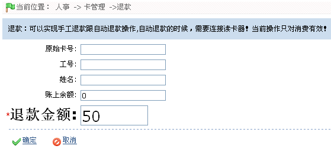
2、在原始卡号后输入需要退款的卡号或通过发卡器读取卡号。单击空白处，将自动显示与卡号对应的卡信息，如下图所示：
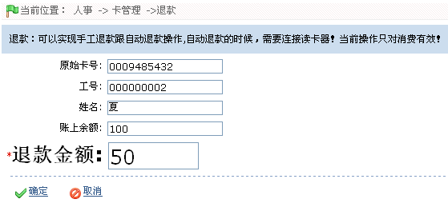
3、在退款金额后输入要退款的金额，然后单击【确定】按钮开始退款，退款成功后，自动返回卡管理页面，此时卡信息列表中，将显示退款成功后的卡信息。
方法二：
 注意：退款操作一次只针对一个卡号，且退款金额不得大于卡上余额。
注意：退款操作一次只针对一个卡号，且退款金额不得大于卡上余额。
1、在卡管理页面的卡信息列表中，单击选中需退款的卡，然后单击卡信息列表上方的【退款】按钮，进入退款页面：
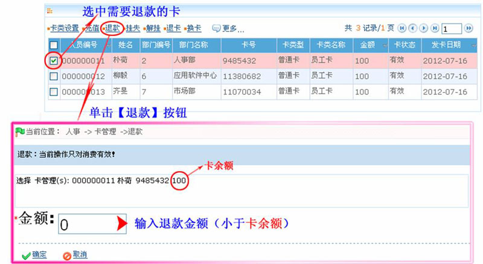
2、在金额后，输入要退款的金额，然后单击【确定】按钮为选中的卡退款。退款成功后自动返回卡管理页面，此时卡信息列表中将显示退款成功后的卡信息。
ID--4.6.5 卡类设置
用于修改已发卡的“卡类”（卡类的设置，请参见ID--8.6 卡类资料。
 备注：已挂失的卡不可进行卡类设置操作。
备注：已挂失的卡不可进行卡类设置操作。
具体操作方法如下：
1、在卡管理页面的卡信息列表中，单击选中需修改卡类的卡，然后单击卡信息列表上方的【卡类设置】按钮，进入修改卡类设置页面：
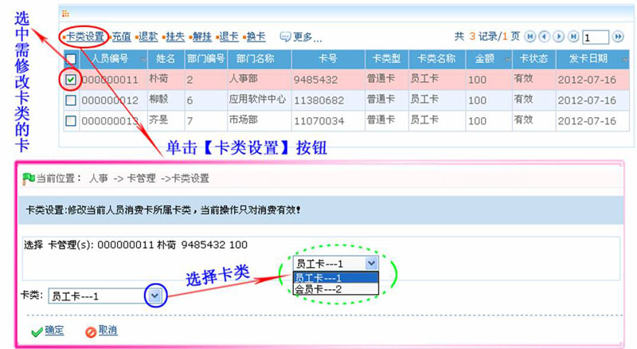
2、单击卡类后的按钮，在弹出的卡类下拉框中，选择卡类。然后单击【确定】按钮保存即可。
ID--4.6.6 挂失卡
 备注：已挂失的卡不可进行挂失卡操作。
备注：已挂失的卡不可进行挂失卡操作。
1、在卡管理页面的卡信息列表中，单击选中需挂失的卡，然后单击卡信息列表上方的【挂失】按钮，进入挂失卡的确认页面：
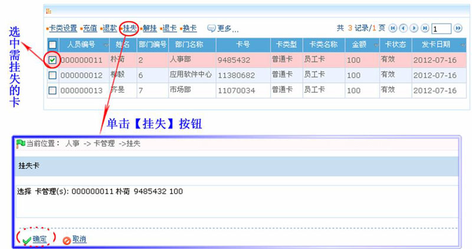
2、单击【确定】按钮，挂失被选中的卡。
ID--4.6.7 解挂卡
 注意：只有挂失的卡才能进行解挂操作。
注意：只有挂失的卡才能进行解挂操作。
1、在卡管理页面的卡信息列表中，单击选中需解挂的卡，然后单击卡信息列表上方的【解挂】按钮，进入解挂卡的确认页面：
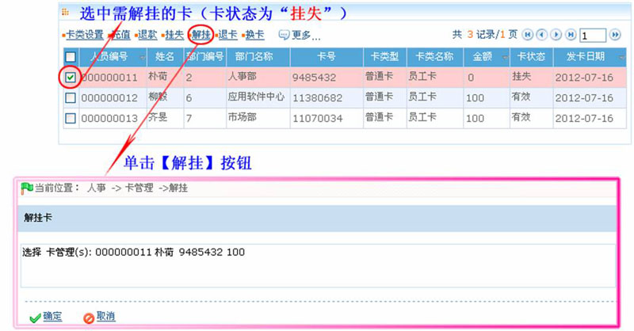
2、单击【确定】按钮，解挂被选中的卡。
ID--4.6.8 退卡
（1）、只有卡余额为0且卡状态为“有效”的卡才能执行退卡操作，若卡余额不为0，用户需先执行退款操作，具体步骤请参见ID--4.6.4 退款；若为挂失卡，退卡前需先解挂卡，具体步骤请参见ID--4.6.7 解挂卡；
（2）、退卡成功后，该卡号可重新分配给其他人员发卡使用；
（3）、退卡成功后，系统会清除该人员卡信息；
（4）、退卡操作可以对管理卡进行退卡，退卡后的管理卡，消费设备会跟系统保持自动同步！
1、在卡管理页面的卡信息列表中，单击选中需退卡的卡，然后单击卡信息列表上方的【退卡】按钮，进入退卡的确认页面：
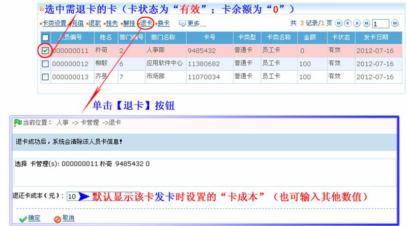
2、在退款卡成功（默认显示该卡发卡时设置的“卡成本”）后输入需退款的卡成本，然后单击【确定】按钮，开始退卡；退卡成功后，自动返回卡管理页面，此时卡信息列表中将不再显示已退卡的卡信息。
ID--4.6.9 换卡
 注意：只有挂失的卡才能进行换卡操作。
注意：只有挂失的卡才能进行换卡操作。
1、在卡管理页面的卡信息列表中，单击选中需换卡的卡，然后单击卡信息列表上方的【换卡】按钮，进入换卡页面：
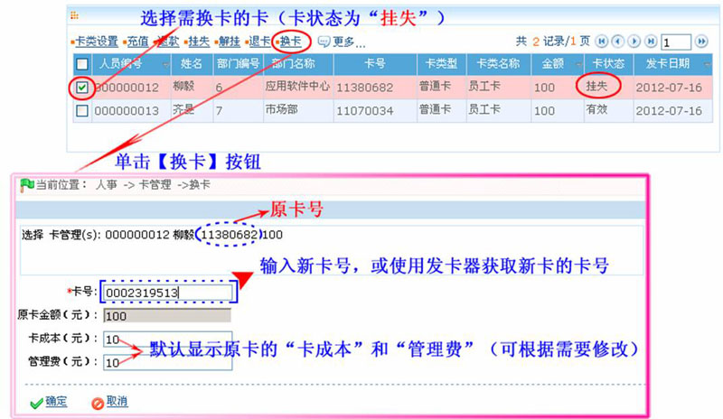
2、在卡号后，输入新卡号，或ID发卡器获取新卡的卡号。根据实际需要设置卡成本和管理费（系统默认显示原卡的“卡成本”和“管理费”）。
3、设置完成后，单击【确定】按钮开始换卡；换卡成功号，自动返回卡管理页面，此时卡信息列表中，将显示新卡的相关信息，如下图蓝色框圈中区域所示；原卡信息将变更为如下图红色框圈中区域所示：
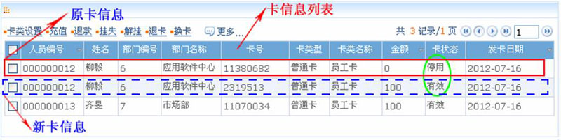
（1）、换卡修改的只是卡号，卡余额都将与原卡一致；
（2）、停用的卡的金额（卡余额）为“0”；
（2）、用户可以采用启用卡的方式启用卡状态为“停用”的卡，具体操作请参见ID--4.6.10 启用卡。
ID--4.6.10 启用卡
在本系统中，用户可以根据需要选择是否启用已被停用的卡。
 注意：执行启用卡操作时，必须先将该停用卡对应的人员正在使用的卡挂失或退卡，才能进行启用操作，即保证每个人员只能存在一张可供使用的卡状态为“有效”的卡。
注意：执行启用卡操作时，必须先将该停用卡对应的人员正在使用的卡挂失或退卡，才能进行启用操作，即保证每个人员只能存在一张可供使用的卡状态为“有效”的卡。
例如：启用人员编号为“000000012”、卡号为“11380682”、卡状态为“停用”的卡，具体描述如下。
1、挂失该“停用”卡对应的人员当前正使用的“有效”卡，具体操作方法如下：
（1）、在卡信息列表中，单击选中需挂失的卡，然后单击卡信息列表上方的【挂失】按钮，进入挂失卡的确认页面：
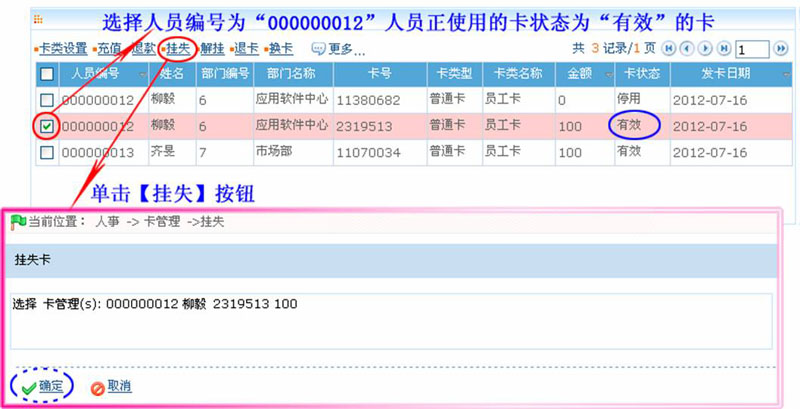
（2）、单击【确定】按钮，挂失被选中的卡。
2、启用人员编号为“000000012”、卡号为“11380682”、卡状态为“停用”的卡，具体操作方法如下：
（1）、在卡信息列表中，单击选中需启用的卡（卡状态为“停用”），然后单击【更多】 【启用卡】，进入启用卡的确认页面：
【启用卡】，进入启用卡的确认页面：
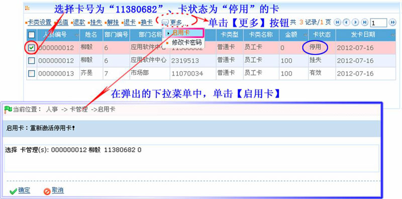
（2）、单击【确定】按钮，启用被选中的卡。
3、启用成功后，自动返回卡管理页面，此时页面显示如下图所示：
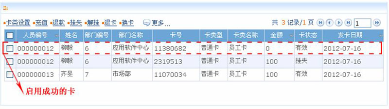
 备注：启用成功后的卡的金额（余额）为“0”，用户可根据实际情况为该卡充值，充值操作请参见ID--4.6.3 充值。
备注：启用成功后的卡的金额（余额）为“0”，用户可根据实际情况为该卡充值，充值操作请参见ID--4.6.3 充值。
ID--4.6.11 修改卡密码
用户可以根据需要修改卡密码（即超额密码），具体操作方法如下：
1、在卡管理页面的卡信息列表中，单击选中需修改卡密码的卡，然后单击【更多】 【修改卡密码】，进入修改卡密码页面：
【修改卡密码】，进入修改卡密码页面：
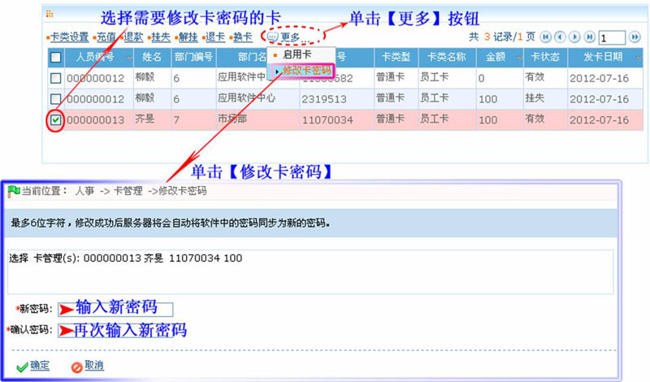
2、在新密码后，输入新密码，并在确认密码后，进行密码确认。（新密码和确认密码，必须一致。）
3、设置完成后，单击【确定】按钮，保存修改。
 备注：在卡管理页面中，用户可以进行卡信息查询、日志记录查看和导出操作，具体操作方法，请参见附录1 常用操作，此处不再重述。
备注：在卡管理页面中，用户可以进行卡信息查询、日志记录查看和导出操作，具体操作方法，请参见附录1 常用操作，此处不再重述。